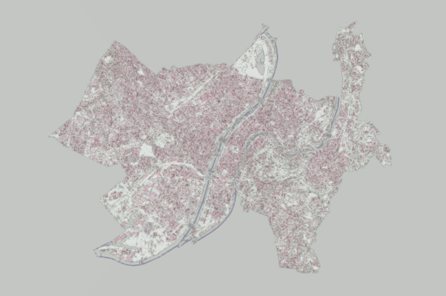

<!doctype html>
<html>
<head>
  <meta charset="utf-8">
  <meta http-equiv="X-UA-Compatible" content="IE=edge,chrome=1">
  <meta name="viewport" content="width=device-width, initial-scale=1">
  <title>XGF Streamed Lyon</title>
  <link rel="icon" href="data:,">
  <link href="../../../../css/example-page.css" rel="stylesheet"/>
  <style>
    body {
      margin: 0;
      overflow: hidden;
      user-select: none;
      font-family: Arial, sans-serif;
      background: #d7e2e7;
    }

    #demoCanvas {
      position: absolute;
      width: 100%;
      height: 100%;
      border: 0;
      background: linear-gradient(#c1d8e7 0%, #edf4f6 58%, #d8dedb 100%);
    }

    .xkt-info-panel,
    .xkt-info-pill {
      display: none !important;
    }

    #streamPanel {
      position: fixed !important;
      top: 44px !important;
      right: 16px !important;
      width: min(420px, calc(100vw - 32px));
      max-height: calc(100vh - 68px);
      overflow: auto;
      background: rgba(255, 255, 255, 0.95);
      border: 1px solid rgba(35, 43, 52, 0.18);
      border-radius: 8px;
      box-shadow: 0 12px 32px rgba(30, 38, 48, 0.18);
      color: #1f2933;
      z-index: 2147483647;
    }

    .panel-header {
      padding: 14px 16px 12px;
      border-bottom: 1px solid rgba(35, 43, 52, 0.12);
    }

    .panel-header h1 {
      margin: 0;
      font-size: 16px;
      line-height: 1.3;
      font-weight: 700;
    }

    .lyon-preview {
      display: block;
      width: 100%;
      height: auto;
      margin: 10px 0 0;
      border-radius: 7px;
      border: 1px solid rgba(35, 43, 52, 0.14);
    }

    .panel-header p {
      margin: 6px 0 0;
      font-size: 12px;
      line-height: 1.4;
      color: #52606d;
    }

    .metrics {
      display: grid;
      grid-template-columns: repeat(3, 1fr);
      gap: 8px;
      padding: 12px 16px;
    }

    .metric {
      min-height: 50px;
      border: 1px solid rgba(35, 43, 52, 0.12);
      border-radius: 7px;
      background: #f8fafb;
      padding: 8px;
    }

    .metric strong {
      display: block;
      font-size: 17px;
      line-height: 1.1;
    }

    .metric span {
      display: block;
      margin-top: 4px;
      font-size: 11px;
      color: #65717d;
    }

    .queue-progress {
      padding: 0 16px 14px;
    }

    .stream-options {
      display: grid;
      gap: 8px;
      padding: 0 16px 14px;
    }

    .switch-row {
      display: flex;
      align-items: center;
      justify-content: space-between;
      gap: 12px;
      min-height: 34px;
      padding: 8px 10px;
      border: 1px solid rgba(35, 43, 52, 0.12);
      border-radius: 7px;
      background: #f8fafb;
      font-size: 12px;
      font-weight: 650;
      color: #26313b;
      cursor: pointer;
    }

    .switch-row input {
      position: relative;
      width: 38px;
      height: 21px;
      flex: 0 0 auto;
      margin: 0;
      border: 0;
      border-radius: 999px;
      background: #b6c3cc;
      appearance: none;
      -webkit-appearance: none;
      cursor: pointer;
    }

    .switch-row input::before {
      content: "";
      position: absolute;
      top: 3px;
      left: 3px;
      width: 15px;
      height: 15px;
      border-radius: 50%;
      background: #ffffff;
      box-shadow: 0 1px 3px rgba(30, 38, 48, 0.28);
      transition: transform 120ms ease;
    }

    .switch-row input:checked {
      background: #177ddc;
    }

    .switch-row input:checked::before {
      transform: translateX(17px);
    }

    .switch-row input:focus-visible {
      outline: 2px solid rgba(23, 125, 220, 0.45);
      outline-offset: 2px;
    }

    .queue-progress label {
      display: flex;
      justify-content: space-between;
      gap: 12px;
      margin-bottom: 7px;
      font-size: 12px;
      color: #52606d;
    }

    progress {
      width: 100%;
      height: 9px;
      appearance: none;
    }

    progress::-webkit-progress-bar {
      background: #d9e2ec;
      border-radius: 999px;
    }

    progress::-webkit-progress-value {
      background: #177ddc;
      border-radius: 999px;
    }

    progress::-moz-progress-bar {
      background: #177ddc;
      border-radius: 999px;
    }

    .hint {
      padding: 0 16px 14px;
      font-size: 12px;
      line-height: 1.4;
      color: #65717d;
    }

    .viewpoints {
      display: grid;
      gap: 8px;
      padding: 0 16px 16px;
    }

    .viewpoint-card {
      width: 100%;
      display: grid;
      gap: 3px;
      text-align: left;
      border: 1px solid rgba(35, 43, 52, 0.14);
      border-radius: 7px;
      background: #ffffff;
      padding: 9px 10px;
      color: #1f2933;
      cursor: pointer;
    }

    .viewpoint-card:hover,
    .viewpoint-card[aria-pressed="true"] {
      border-color: #177ddc;
      background: #f2f8fd;
    }

    .viewpoint-card strong {
      font-size: 13px;
      line-height: 1.25;
    }

    .viewpoint-card span {
      font-size: 11px;
      line-height: 1.3;
      color: #65717d;
    }
  </style>
</head>
<body>
<canvas id="demoCanvas"></canvas>
<aside id="streamPanel" aria-label="XGF streaming status">
  <div class="panel-header">
    <h1>XGF Streamed Lyon</h1>
    
    <p>Visible chunks are prioritized from the current camera frustum across the merged Lyon XKT source files.</p>
  </div>
  <div class="metrics">
    <div class="metric">
      <strong id="loadedChunks">0/0</strong>
      <span>chunks</span>
    </div>
    <div class="metric">
      <strong id="objectCount">0</strong>
      <span>objects</span>
    </div>
    <div class="metric">
      <strong id="meshCount">0</strong>
      <span>meshes</span>
    </div>
  </div>
  <div class="queue-progress">
    <label for="frustumQueueProgress">
      <span>Current frustum</span>
      <span id="frustumQueueLabel">Preparing stream</span>
    </label>
    <progress id="frustumQueueProgress" max="1" value="0"></progress>
  </div>
  <div class="stream-options">
    <label class="switch-row" for="stallStreamingToggle">
      <span>Stall streaming while moving</span>
      <input id="stallStreamingToggle" type="checkbox">
    </label>
  </div>
  <div class="hint" id="streamStatus">Preparing stream index</div>
  <div class="viewpoints" id="viewpointCards" aria-label="Viewpoints"></div>
</aside>
<script type="module" src="./index.js"></script>
</body>
</html>
